3 Географическая привязка
3.1 Географическая привязка в ArcGIS Pro
3.1.1 Привязка на основе ввода координат
Создайте новый проект и сохраните его. Задайте систему координат датафрейма (карты) – для этого зайдите в свойства Map и перейдите во вкладку Coordinate Systems, раскройте список Projected coordinate system и выберите нужную СК.
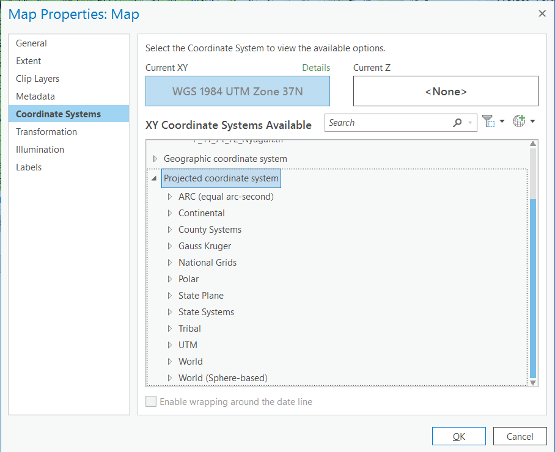
Добавьте из панели каталога растр, который необходимо привязать.Выделите его в списке слоев и во вкладке Imagery нажмите на кнопку Georeference.
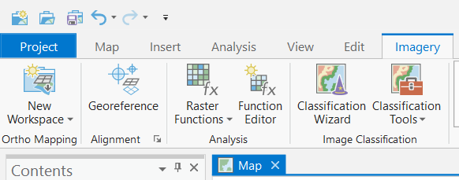
Открытая панель привязки состоит из нескольких кнопок. Убедитесь, что у вас нажата кнопка Auto Apply, которая позволяет трансформировать изображение на лету.
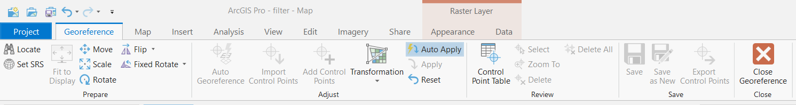
Нажмите на кнопку Add Control Points
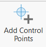
и установите опорную точку в нужном месте на карте. После этого вам будет предложено установить соответственную точку на референцном слое или ввести заданные координаты для точки – для этого щёлкните правой кнопкой мыши, после чего откроется окошко для ввода координат.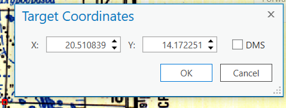
Если нажать на кнопку Control Point Table
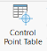
, то откроется таблица, где будут показаны все установленные опорные точки с их координатами в исходной и референцной системе координат. В этой же таблице указываются ошибки (невязки) общая и по отдельным координатам. Слева можно включать и выключать точки из расчёта. Когда точка выключена из расчёта, она превращается из опорной в контрольную.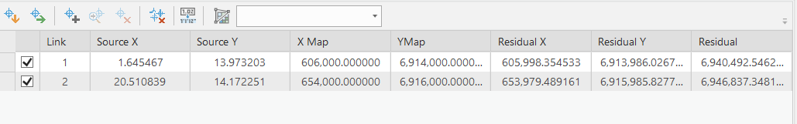
Установив необходимое количество точек, вы можете нажать на кнопку Transformation
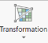
и выбрать тип трансформации. После установки опорных точек и выбора типа трансформации можно запустить процесс трансформирования и сохранения нового изображения, нажав на кнопку . При сохранении укажите путь внутрь базы данных, название для слоя, убедитесь в том, что разрешение выходного растра составляет 30 на 30, а также укажите глубину цветности 16 или 32 bit unsigned.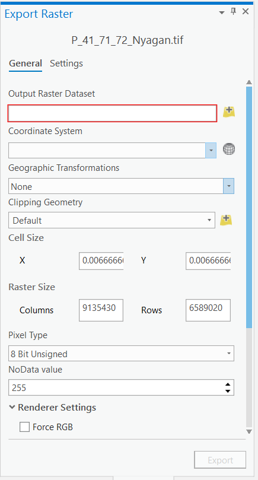
Обратите внимание, что опорные точки можно сохранять отдельно (экспортировать) – для этого есть кнопка Export Control Points и импортировать Import Control Points.
3.1.2 Привязка на основе референцного изображения
При привязке снимка к референцному изображению удобно воспользоваться кнопкой Fit to Display
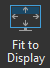
, которая переместит привязывамаемое изображение в экстент, соответствующий текущему дисплею карты.Далее для привязки неоходимо снова нажать на кнопку Add Control Points и поставить сначала точку на привязываемом изображении, а затем на референцном.

К сожалению, в ArcGIS нет возможности сделать контрольные точки для оценки точности в данном модуле, но их можно создать искусственно. Для этого в окне каталога найдите свою базу данных или создайте новую. Внутри базы данных создайте точечный класс векторных объектов.
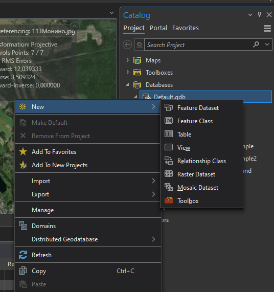
Задайте имя класса объекта латинскими буквами, без пробелов и спецсимволов, укажите тип геометрии – Point, снимите галочку с координаты Z.
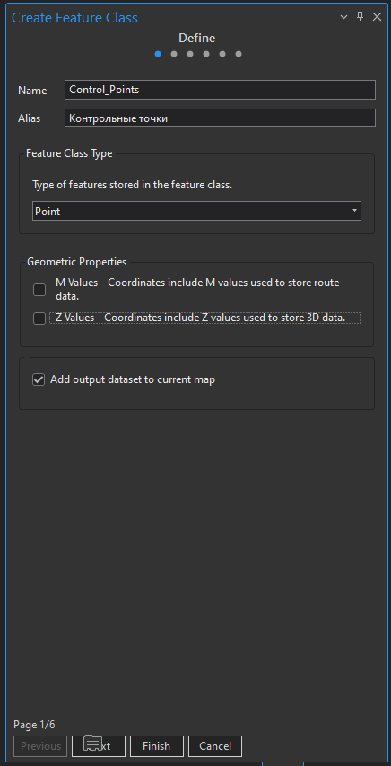
Нас следующем шаге укажите целевую систему координат и нажмите на кнопку Finish.
Добавьте созданный класс объектов в качестве слоя на карту, если он не добавился автоматически. Выделите слой, перейдите на вкладку Edit, затем нажмите на кнопку Create и у вас откроется панель с шаблонами для создания векторных объектов. Выделите шаблон, нажмите на появившуюся под ним кнопку Create point feature и установите точку на референцном изображении. Сохраните изменения, нажав на кнопку Save.
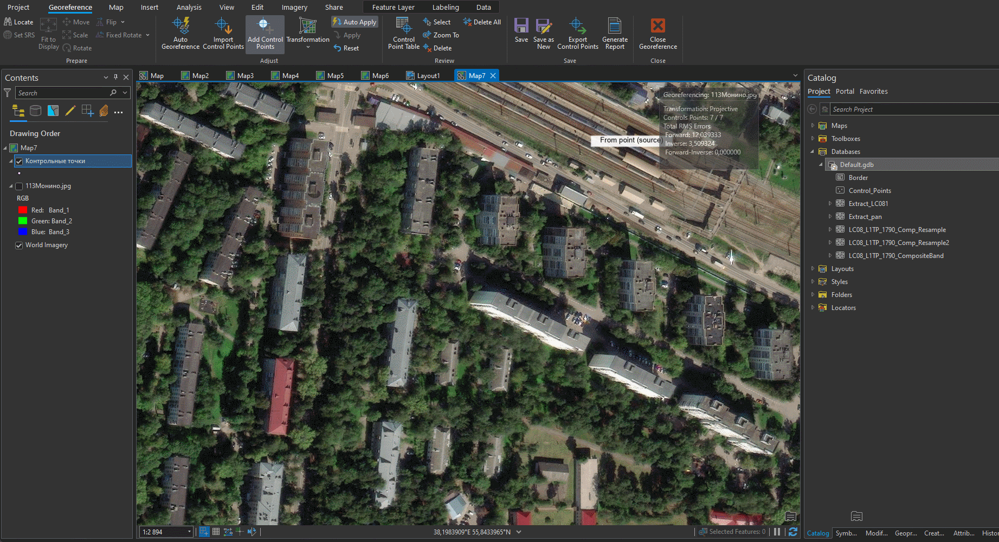
Эти точки будут выступать в качестве реперов для оценки точности привязки. Для оценки отклонений их образа на привязываемом изображении перейдите на вкладку Map, возьмите линейку и измерьте расстояние от установленной точки до её предполагаемого положения на привязываемом изображении.
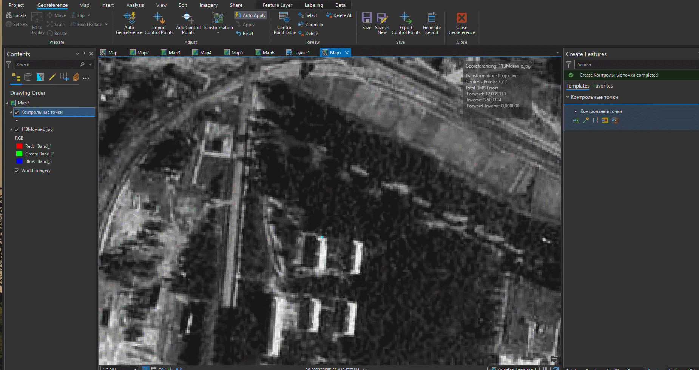
3.2 Географическая привязка в QGIS
Для привязки данных дистанционного зондирования в QGIS можно использовать WMS-сервис с мозаикой спутниковых снимков. Для включения мозаики зайдите в меню Модули – Управление и установка модулей…. Впишите в строку поиска QuickMapServices. Установите модуль.
Откроется окно модуля. В окне поиска геосервиса введите Google satelite или какой-либо еще картографический веб-сервис со спутниковой подложкой. Нажмите Добавить.
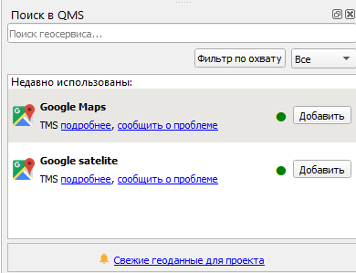
Добавьте в качестве слоя данных привязываемый снимок.
В меню Layers найдите пункт Referencer
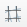
.Откроется окно привязки. Нажмите на кнопку Open Raster  , добавьте привязываемый растр. Щелчок левой кнопкой мыши по привязываемому изображению открое окно, куда будет предложено ввести координаты. Если вы для привязки хотите использовать референцное изображение, нажмите на кнопку С карты.
, добавьте привязываемый растр. Щелчок левой кнопкой мыши по привязываемому изображению открое окно, куда будет предложено ввести координаты. Если вы для привязки хотите использовать референцное изображение, нажмите на кнопку С карты.
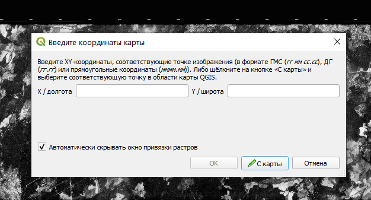
Для настройки параметров трансформации нажмите на кнопку . Опорные точки можно сохранять и подгружать – для этого используйте соответствующие кнопки на панели. Для запуска процесса трансформации нажмите на кнопку
После добавления трансформированного изображения в основное окно карты убедитесь в правильности проделанной операции, сравнивая его с подложкой из мозаики спутниковых снимков. Для этого удобно использовать инструмент шторки.
Зайдите в Модули – Управление и установка модулей… и вбейте в поиск MapSwipe Tool. После этого появится панель шторки.
Выберите слой, который будет активен в режиме шторки (будет находиться под шторкой) и нажмите на кнопку  .
.
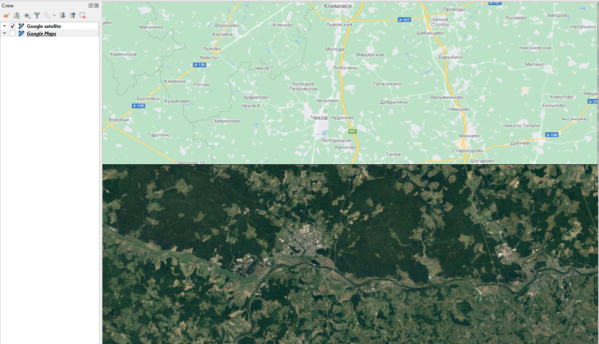
Установите опорные точки. Внизу окна появится таблица с вашими точками привязки – будут указаны координаты этих точек в исходной СК изображения и в целевой СК, а также невязки. Далее необходимо указать способ трансформации для расчёта невязок. Нажмите на кнопку . В качестве типа трансформации для топографических карт должно быть достаточно полиномиального первой степени. Укажите целевую систему координат (в которой вводились координаты точек), а также путь для сохраняемого файла.
Сохраняйте файлы в папку с путями без латиницы, пробелов и спецсимволов.
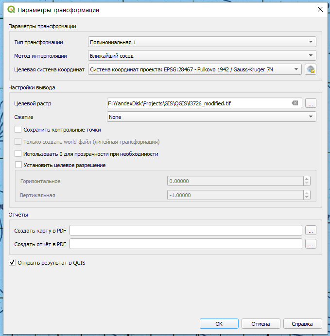
После указания типа трансформации в таблице внизу должны появиться расчётные невязки. Убедитесь в том, что невязки имеют значение менее пикселя. Если невязка более пикселя, нужно удалить неправильную опорную точку, нажав на кнопку и выбрав точку на карте. Для добавления новой точки выберите кнопку . Когда точность трансформации станет удовлетворительной, запустите сам процесс трансформации, нажав на кнопку . Закройте модуль привязки.
Привязка материалов аэрофотосъёмки происходит аналогично, но в качестве опорных точек выступают соответственные точки на топографической карте. Для этого нужно сопоставить снимок с картой и найти эти точки. В модуле привязке выберите точку, но при появлении окна не вводите координаты, а выберите кнопку С карты.
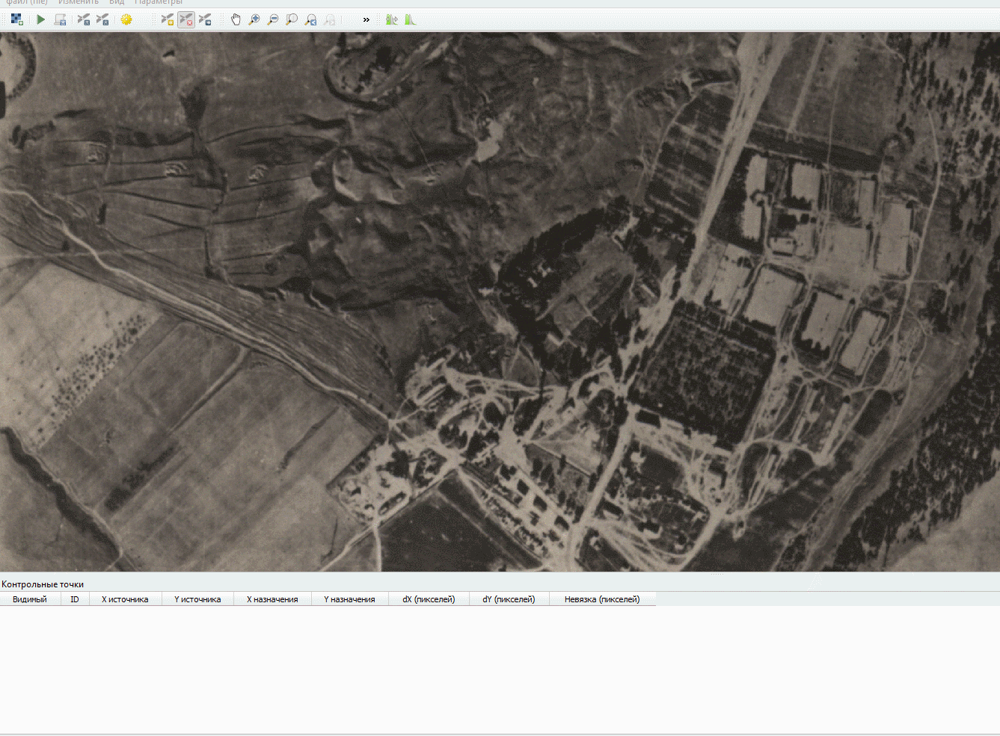